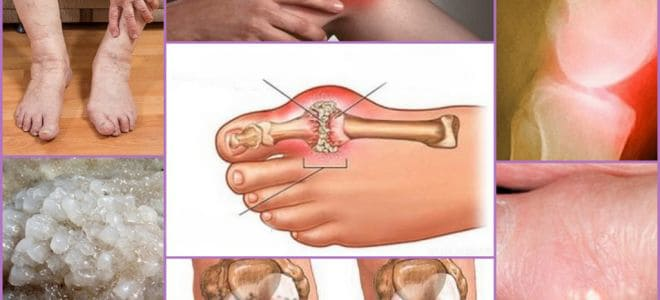

“L'approccio italiano
al trattamento dei disturbi articolari è semplicemente sconcertante”. Un famoso esperto
tedesco rilascia un'intervista sincera ai media italiani
Karl Kirschmayer Responsabile del centro di
reumatologia di Berlino Tumorzentrum Eva Mayr-Stihl presso la clinica di fama mondiale
Charité:
Le malattie articolari sono causate da una sola cosa, del tutto ignorata dai medici italiani.
Karl Kirschmayer: In Italia, le malattie articolari
vengono ancora trattate con farmaci obsoleti e inefficaci che richiedono una
somministrazione continua. Nel resto d'Europa invece, le articolazioni vengono curate
altrettanto facilmente di un comune raffreddore.
L'anno scorso, Karl Kirschmayer ha visitato l'Italia proprio per
acquisire familiarità con l'esperienza professionale dei suoi colleghi italiani. Ciò che ha
visto è, dice, molto difficile da spiegarsi. Karl Kirschmayer ritiene che nel nostro paese la
scienza reumatologica sia rimasta bloccata alla metà del secolo scorso.
Dopo diverse conferenze ad alto livello in Germania, il Karl
Kirschmayer ha accettato di rilasciare un'intervista a un media italiano. Cos'è che non piace
a questo noto specialista dell'approccio italiano e perché sostiene che i pazienti ITALIANI
affetti
da malattie articolari non guariranno mai?
– Nel rispondere alle domande dei giornalisti tedeschi, ha
affermato di essere scioccato da quello che ha visto in Italia. Cosa ci può dire al
riguardo?
– Prima di tutto, mi lasci mettere in chiaro che non ho nulla contro
l'Italia e che, anzi, apprezzo molto la cultura e il popolo italiani. Tuttavia, l'assistenza
sanitaria nel vostro Paese è davvero scioccante. È in ritardo di almeno 20, forse 30 anni.
Almeno quando si parla di trattamento delle malattie articolari e del sistema
muscolo-scheletrico. Possiamo dire che la reumatologia, in Italia, è del tutto inesistente.
I rimedi che vengono prescritti qui non curano ARTICOLAZIONI E CARTILAGINE, non
fanno che alleviare i sintomi: dolore, infiammazione, gonfiore. Indovinate cosa succede
realmente al corpo. Quando prendiamo una pillola, spalmiamo un gel anestetico o ci facciamo
un'iniezione, il dolore scompare. Ma non appena l'effetto del farmaco si esaurisce, il dolore
si ripresenta immediatamente.
Il dolore è un segnale importante, che indica un processo patologico
nelle articolazioni. Quando viene semplicemente bloccato il dolore, le articolazioni malate
sono soggette a un processo distruttivo ancora maggiore. Si deteriorano 3-5 volte più
velocemente e ciò alla fine provoca cambiamenti irreversibili e alla completa immobilizzazione
e disabilità.
In Europa, questo approccio al dolore articolare non viene più
utilizzato da oltre vent'anni. Gli antidolorifici vengono prescritti solo in casi estremi, e
con grande cautela e scrupolo. In Germania, vengono venduti solo dietro prescrizione e stretta
sorveglianza specialista.
I cosiddetti “condroprotettori” sono del tutto banditi, essendo
farmaci inutili, una vera e propria truffa.
I vostri specialisti e chimici non fanno che rendere disabili i pazienti!
È chiaro che vendere costosi antidolorifici che eliminano i sintomi è molto più redditizio che
curare la malattia una volta per tutte, ricostituendo l'articolazione deteriorata. Ma come
possono darsi a pratiche del genere!
– Come vengono curate le malattie articolari, in Germania?
– Tutti professionisti tedeschi sanno da tempo che per curare la
malattia bisogna agire sulle cause piuttosto che
sulle conseguenze. Questa è la sola garanzia di recupero completo, rapido e sicuro. Ma qual è
la causa principale dei disturbi articolari? Accumulo di orto-sali a causa di disturbi
circolatori e problemi di circolazione del liquido sinoviale.
Urati o il vero sale dell'acido urico, la causa della gotta.
Gli osteofiti o i sali calcinati causano il rimanente 97% delle
malattie alle articolazioni e alla colonna vertebrale. Si tratta di ogni tipo di artrite e
artrosi, DDD, osteoporosi, reumatismi, borsite e persino igroma. Tutte queste malattie hanno
una causa principale: i depositi di osteofiti.
I sali si accumulano sulla superficie articolare e, come la carta
vetrata, erodono i tessuti circostanti, cioè l'osso e la cartilagine. I cristalli di sale in
aumento danneggiano il tessuto muscolare, i tendini, i vasi sanguigni e i capillari. Causando,
di conseguenza, infiammazione, infezione, gonfiore e dolore acuto.
Nei casi in cui la malattia sia giunta a uno stadio avanzato, dei
grandi gruppi di ortosali possono facilmente rompere un osso a seguito di un movimento
improvviso, causando in tal modo la completa disabilità e l'immobilizzazione permanente
dell'articolazione.
Una falsa convinzione molto pericolosa è quella che vuole che il
calcio faccia bene alle ossa. Il calcio fa bene, certo, ma solo se si hanno
articolazioni IN BUONA SALUTE. Quando le articolazioni sono rotte o danneggiate, ciò
significa che si è già formato uno strato di osteofiti attorno ad esse. Oltre a rafforzare il
tessuto osseo, il calcio rinforza anche i sali degli osteofiti, aggravandone e accelerandone
la crescita.
Pertanto, i specialisti-reumatologitedeschi ripristinano innanzitutto
la
circolazione sanguigna nell'articolazione colpita per eliminare gli ortosali accumulatisi nel
corso degli anni. Ciò, a sua volta. ripristina la normale circolazione del liquido sinoviale e
innesca il processo di recupero dei tessuti articolari.

Calcificazione Articolazione danneggiata e infiammata Cristalli di sale
“Crescita” di ortosali sulla superficie delle articolazioni, la
causa alla base di tutte le alterazioni patologiche.
Stranamente, le articolazioni possono essere rigenerate molto
efficacemente, riescono a guarire da sé, proprio come a una lucertola ricresce la coda. Hanno
solo bisogno di un piccolo aiuto per eliminare i depositi di ortosali e il processo si avvia
da sé.
Già negli anni '90, gli scienziati svizzeri hanno scoperto nell’olio
di eucalipto un composto organico attivo: l’eucaliptolo. Grazie alla sua azione, i vasi
sanguigni si dilatano, l'afflusso di sangue alle articolazioni migliora, l'infiammazione
diminuisce, il dolore passa.
Questa sostanza è in grado di penetrare nelle molecole di ortosali ed
eliminarle dall'interno, pulendo la superficie delle articolazioni, ripristinano la
circolazione del sangue e del fluido sinoviale. L'effetto è PERMANENTE! O meglio, finché i
sali non si accumulano nuovamente (il che richiederà diversi decenni). Per sbarazzarsi di
dolore e infiammazione, non è più necessario assumere farmaci in maniera continuativa. Non c'è
da temere che un giorno l'articolazione possa rimanere “bloccata” per sempre e che si possa
restare completamente privati della mobilità e che si dovrà ricorrere a una protesi. La gente
guarisce definitivamente o, almeno, non ha più problemi per per decenni.
Quando ho visto le statistiche mediche italiane, mi hanno fatto
rizzare i capelli sulla testa. Sapete qual è la causa di disabilità più frequente, in Italia?
Non il cancro, il diabete o l'AIDS, ma l'artrosi! Se in Germania l'artrosi viene curata nel
giro di 4-6 settimane con farmaci relativamente economici, in Italia la stessa malattia può
causare disabilità permanente!
Oggi in Germania, noi non consideriamo più i disturbi articolari
pericolosi. Del resto, non parlo di gravi lesioni traumatiche: lesioni, fratture ossee,
strappi, ecc. Le articolazioni doloranti e infiammate sono semplicemente l'indicazione della
loro “contaminazione” da parte dei sali. Dopo un ciclo di trattamento di depurazione di 4-6
settimane, queste ritornano alle loro condizioni normali e non avranno più problemi per almeno
dieci anni a venire.
Le malattie articolari, che in Italia vengono “curate” in maniera
diversa, in Europa vengono associate da tempo a quel disturbo chiamato calcificazione
articolare. Queste comprendono:
– Gotta
– Artrite
– Osteoartrosi
– Degenerazione del disco
– Reumatismi
– Osteoporosi
– Borsite
– Sinovite
– Igroma
Quelli appena elencati sono una generalizzazione di uno spettro di
malattie che comprende diverse sottoclassi di disturbi. Ad esempio, la coxartrosi è un tipo di
osteoartrosi, ecc.
Questa lunga lista di malattie viene trattata molto facilmente, con
una semplice pulizia articolare. È assolutamente sicura, non richiede alcun controllo medico e
può essere fatta a casa.
– Come “pulite” le articolazioni, in Germania?
– Ci sono prodotti speciali progettati per pulire le articolazioni
dai depositi di sale. Ma non tutti sono efficaci. è stato
selezionato dagli esperti come uno dei migliori prodotti. Contiene l’eucaliptolo in una forma
speciale e facilmente digeribile, quindi aiuta ad ottenere rapidamente l'effetto terapeutico
desiderato.
Un altro importante vantaggio di è che contiene un
complesso di vitamine benefiche per le articolazioni e di oligoelementi, studiato per
migliorare le prestazioni dei tessuti articolari. Vale a dire che ha un adeguato effetto
curativo sul tessuto l'osso e la cartilagine, sul fluido sinoviale, sulle fibre muscolari, sui
legamenti e sui tendini. In altre parole, svolge un'azione completa e ad ampio spettro.
Una composizione naturale unica al mondo CON ALTA
BIOACCESSIBILITA'
1. Arnica montana extract.Fornisce proprietà antinfiammatorie,
antiecchimotiche e analgesiche. Ha anche un effetto antisettico e vasoprotettivo.
2. Olio di canfora.Si applica contro dolori articolari di varie eziologie, tra
cui l'artrite reumatoide, l'infiammazione dei muscoli, l'infiammazione dei tendini, con
dolori nervosi.
3. Mentolo.Mostra un'attività antisettica, raffredda la pelle e ha anche un
effetto anestetico locale.
4. Olio essenziale di eucalipto.Grazie al cineolo contenuto in esso, ha
proprietà antisettiche e antinfiammatorie. Inoltre inibisce la crescita batterica e ha un
effetto rinfrescante per la pelle e le mucose.
– Per quanto ne so, non è venduto nelle farmacie
italiane, no?
– In effetti no. I specialisti italiani preferiscono “imbottire” la gente
con antidolorifici e condroprotettori, piuttosto che curarla.
Allo stesso tempo, i specialisti-reumatologi italiani, almeno quelli
tra loro che
sono interessati alle terapie avanzate, conoscono sicuramente e le
sue proprietà rigenerative. Ma non osano prescrivere il farmaco, che non è nell'elenco dei
farmaci raccomandati in Italia
Per quanto ne so, il produttore di voleva entrare nel
mercato italiano, ma non gli è stato permesso di farlo a causa di centinaia di ostacoli
pretestuosi (la burocrazia italiana è davvero inespugnabile). Non è difficile capire il
perché: se questo farmaco dovesse arrivare in farmacia, le grandi aziende farmaceutiche
subirebbero enormi perdite. Dopo tutto, l'industria farmaceutica è prima di tutto un business!
Perfino in Europa. Ma nel resto d'Europa, questo settore è controllato dal governo.
– E come si fa ad ottenere il preparato se
non
è in vendita in farmacia?
– Abbiamo deciso che se i farmacisti ci mettono i bastoni tra le
ruote, possiamo tranquillamente farne a meno. Abbiamo organizzato una
distribuzione diretta di “”. Senza quindi avere le case farmaceutiche come
intermediario. Abbiamo valutato diverse tipologie di possibilità e abbiamo
scelto quella più efficace. Chi vuole vincere “” deve prendere parte al concorso,
in seguito sarà contattato per ricevere il preparato. dopo di che si viene
contattati da un consulente che consiglia il miglior trattamento da seguire
e si organizza la spedizione del farmaco. Per decisione del dipartimento di Ricerca e sviluppo
del quinto Istituto di Biologia e Nutrizione italiano del 2019, chiunque può partecipare alla
lotteria. Oggi, quasi tutti hanno Internet. Anche se non hanno un computer, hanno un telefono
con accesso ad Internet.
Ogni persona può prendere parte al concorso per vincere
fino
al
compreso.
Quest’offerta che abbiamo creato per l’ Italia
per attirare l’attenzione
delle persone nei confronti di questo preparato. Speriamo che abbia un
effetto “virale” e che ognuno lo raccomandi ai suoi amici.
– Ma quanto costa questo preparato
Il costo di fabbricazione del preparato è di circa 100 euro a
confezione. Siamo riusciti a metterci d’accordo con gli organi statali Italiani
per ricevere fondi per
coprire la maggior parte delle spese. Circa il 50%. Fortunatamente capiscono
quanto sia importante che questo preparato sia conosciuto dalla popolazione, e non solo da
pochi
fortunati. In cambio noi abbiamo accettato di non esportare il preparato all'estero ma di
distribuirlo solo in Italia.
Commenti
Simona Petrilli/ Ostuni
Grazie. Davvero efficace! Io ho dovuto pagarlo
! in una clinica privata per un ciclo di iniezioni. Ho ordinato ora che è
in promozione. Il responsabile ha detto che è ancora disponibile, ma
che stanno ricevendo molti ordini. Sono felice di avere questa occasione.
Teresa Diamanti/Torino
Sono tra i fortunati a essere riusciti a provare
. È davvero il migliore. Ho sofferto di osteoartrosi per sette lunghi anni, una
vera tortura. Ero pronto a prendere pillole e iniezioni per il resto della mia vita, ma alla
fine, dopo un ciclo di , il dolore è sparito. Andato completamente.
Lo consiglio a tutti: funziona!
Fabrizio Moneta/ Bergamo
Ho 63 anni. Il ginocchio mi faceva male da quando ne
avevo 53. Di recente, il dolore era diventato insopportabile. Un medico mio amico d'infanzia
mi ha parlato del programma e mi ha consigliato di prendere questo farmaco tre mesi fa.
Adesso salto come un canguro... Anche se dovrei fare più attenzione. Comunque, questo
farmaco è il meglio del meglio!
Giuliana Cola/sconosciuta
Io ho richiesto il mio in offerta speciale. Mi hanno
promesso che me lo avrebbero consegnato entro 5 giorni all'ufficio postale. Non vedo l'ora.
Cristiana Falcini
Credo che i nostri medici siano molto bravi a
fregarci. I soldi sono l'unica cosa a cui tengono. Io mi faccio le iniezioni ogni sei mesi.
Lo scorso autunno, mi ha prescritto così tanta roba che avevo paura di iniziare il
trattamento. Non ha nemmeno dato un'occhiata ai miei altri disturbi e ai possibili effetti
collaterali. Non le importava nulla, mi ha semplicemente dato la ricetta per il marchio che
le hanno detto di prescrivere. Magari sistemi sanitari sono diversi, non so. Il nostro è un
incubo. Sono contento che esista un farmaco europeo abbordabile!
Guido Marrone/Sorrento
Sì, nel nostro paese tutto ciò che si può fare è
morire. Io ho 59 anni. I due terzi dei miei coetanei sono morti e gli altri si muovono a
malapena a causa del dolore incessante alle gambe, braccia, schiena... Mi pare sia il caso
di pensare a comprare questa medicina.
Vittorio Strologo/Genova
Questo farmaco è veramente fenomenale. Io ho fatto
un ciclo l'estate scorsa (mio figlio me l'ha portato dalla Germania). La mia gotta è
sparita! Finora, non si è mai ripresentata. Io stesso sono davvero sorpreso. Mi sento come
se avessi di nuovo vent'anni. Lo consiglio a tutti. Non perdetevelo, ora costa solo 49 non avete niente da perdere!
Sonia/ Bari
Anche la mia esperienza con è positiva. Mi
sono sempre fatta le iniezioni ma, dopo aver usato , è da un mese che vado alla
grande!
Micaela Trucidi/Ancona
Anche a me questo farmaco è piaciuto. Prima prendevo
l'etodolac, poi il meloxicam e poi ancora il cetorol. Ma non facevano più effetto. Sono
andata dal specialista, che mi ha consigliato di provare il nuovo annabisvital Oil (il
esperto era giovane, probabilmente crede ancora che la medicina dovrebbe essere per le
persone, non per farci succhiare soldi!). mi è stato di sollievo già dalla
prima applicazione. Il dolore è scomparso quasi immediatamente, ma io ho fatto un intero
ciclo di trattamento, come prescritto dal medico. Tre settimane dopo avevo dimenticato
quanto soffrissi. Mi sento benissimo, come se fossi di nuovo giovane!
Fabio Rondone/Caltanissetta
Il mio vicino, che ha 72 anni, si lamentava sempre
della sua schiena. Ma il mese scorso l'ho incontrato e mi è sembrato tutto attivo e arzillo.
Mi ha detto di aver usato , che suo nipote gli aveva portato da non so dove.
Emilia Piccinini/Velletri
Ho letto delle recensioni su dei forum tedeschi a proposito di ,
ora capisco che lo stanno finendo! Grazie a Dio, sono riuscito a ordinarlo a 49 . Al
telefono mi hanno detto che ne restano ancora solo poche confezioni. Grande Italia!
Pino Durotti/Afragola
Ho scoperto su uno di quei forum dove
parlano di dolori articolari. Un sacco di gente dice che è buonissimo. Ho deciso di
ordinarlo anch'io. Lo uso solo da tre giorni, ma i miglioramenti sono già evidenti. Il
dolore è completamente scomparso, l'articolazione non mi scricchiola più, è ancora un po'
gonfia, ma molto meno di prima. Vi farò sapere una volta finito il ciclo di trattamento ma
finora sono davvero soddisfatta.
Luciana Rispoli/sconosciuta
Grazie. L'ho ordinato per me e per mio marito. Ho
chiesto al loro consulente quando sarà venduto in farmacia, ma lui ha detto di non averne
idea. Questa è la sola occasione per provare questo farmaco.


Commenti